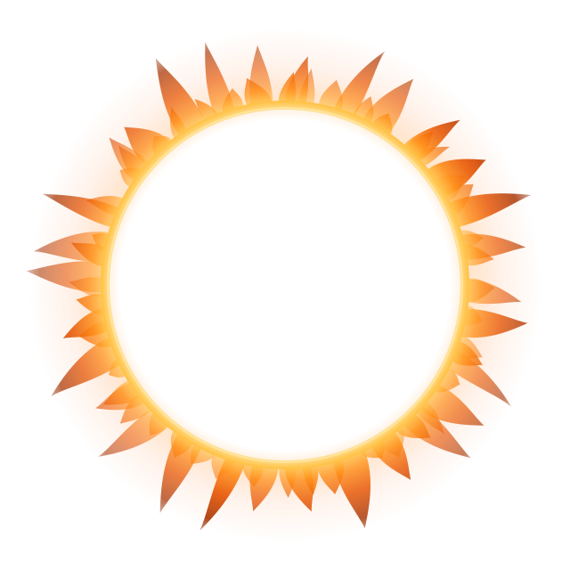

SUPERNATURALSUPERNATURALВсе существа сериала Supernatural — 354 записи: от вендиго и штриги до архангелов, Принцев Ада и первичных сущностей. Собрано по Supernatural Wiki и адаптировано под три ролевые системы.
354 записи · 295 существ и высших сущностей · 269 иллюстраций · три редакции правил
Полные статблоки пятой редакции: КД, хиты, характеристики, действия, легендарные действия и уровень опасности от 0 до 30.
Пулы способностей, Порог попадания, потеря Стабильности и — главное — улики: через какие способности охотники узнают, как тварь убивается.
Только d6 и пара кубиков — светлый и тёмный. Успех читают по светлому, провал по тёмному: цена и обязательный шаг вперёд.